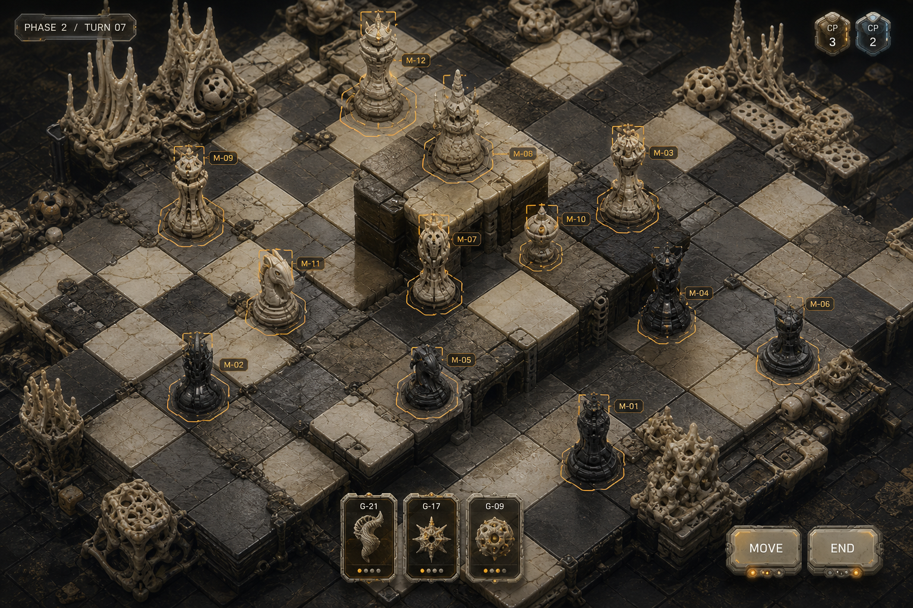
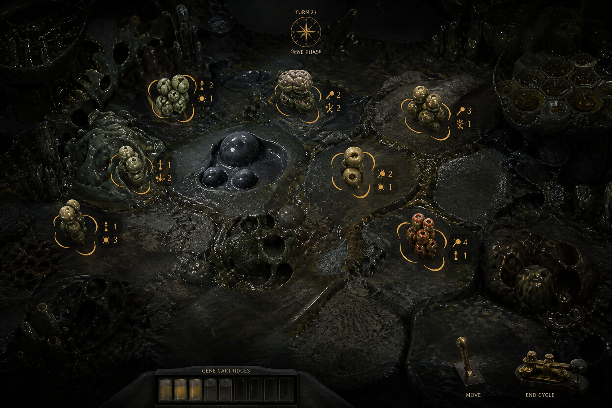
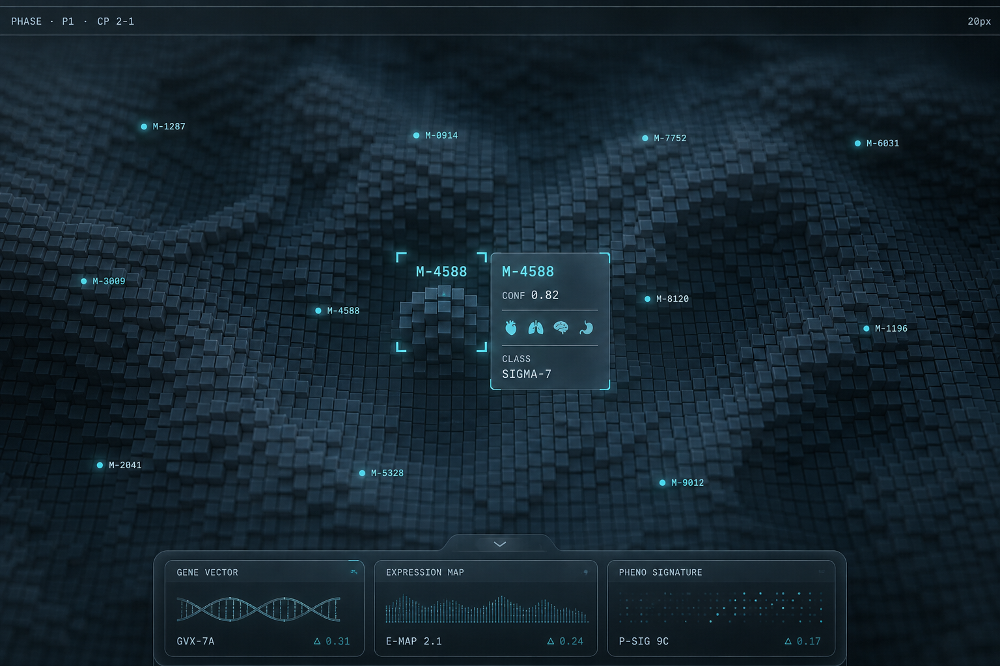
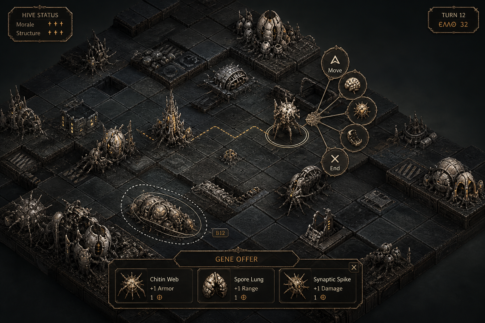
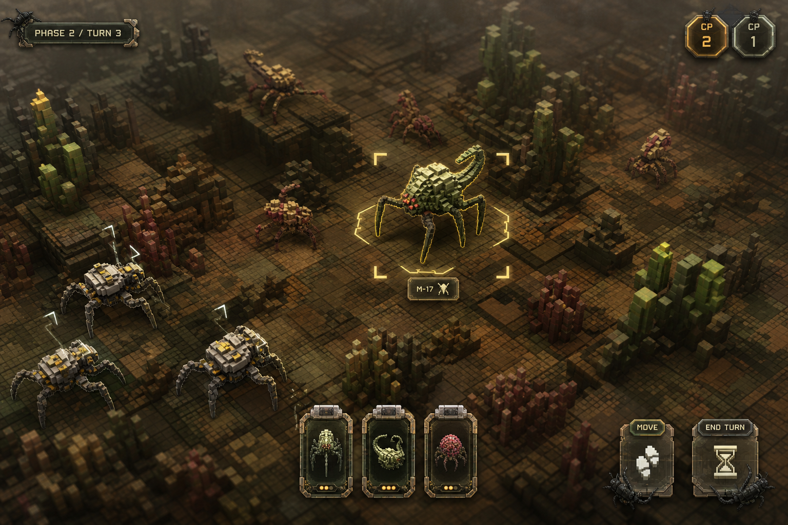
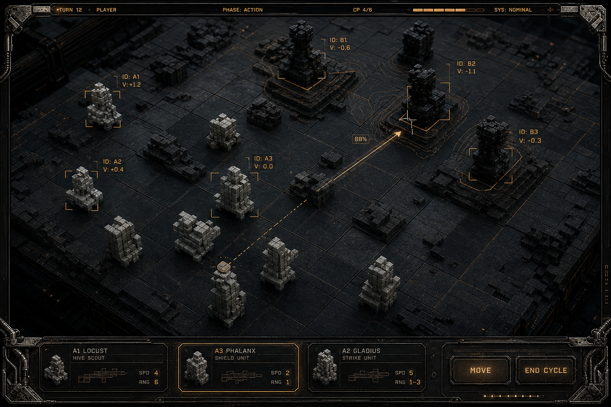
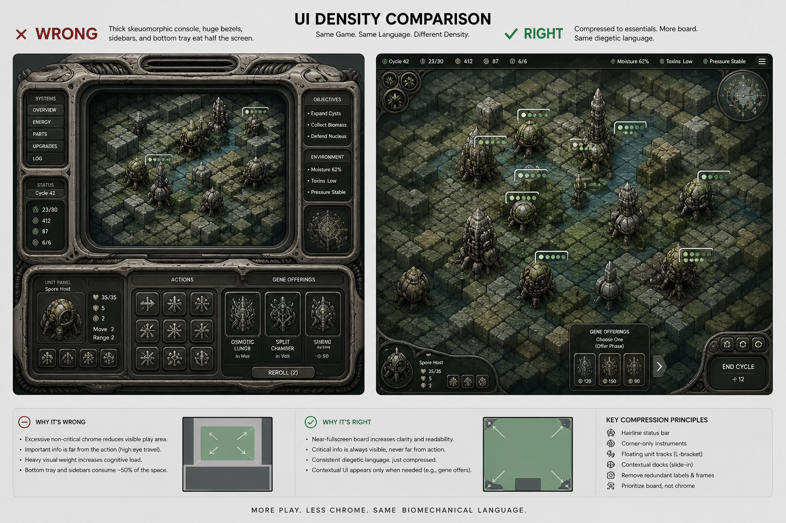

Chess 3 — HUD visual concepts
Board-first floating instruments. Prefer K1–K5. See RESEARCH.md.
K1 — Corner plaques + bottom tray

K2 — Selection orbit ring
K3 — Diegetic micro-objects (Cryo)

K4 — Sparse clinical

K5 — Radial petal commands

Earlier K / density
K — Floating micro-instruments (original)

I — Board-first thin chrome

J — Density compare
